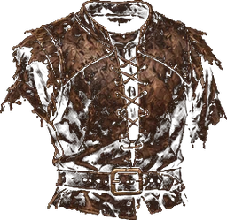
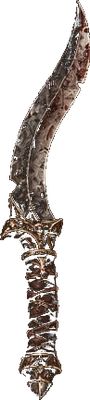
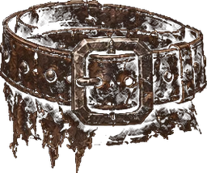
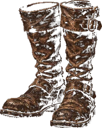
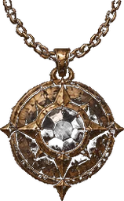
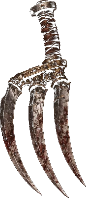
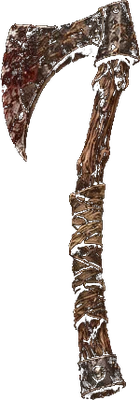

an





Zwei Dolche gleicher Seltenheit im Beutel. Die Klaue und das Beil sind eine andere Grundform, der dritte Dolch ist gelb statt blau.
Du nimmst einen Bonus vom Futter und setzt ihn ins Hauptteil. Das Futter zerfällt dabei.
Je Teil nur eine Fusion — danach nie wieder.
✦ versiegelt — unantastbar
Der andere Bonus geht mit verloren.
Scharfer Dolch verliert Blocken 4 %
und erhält Krit-Schaden 31 % (II).
Der Dolch des Gemetzels zerfällt.
Dritter Bonus → wird selten
Nichts wird überschrieben — der dritte Bonus kommt dazu. Zwei Boni sind magisch, drei sind selten.
Schaden und Rüstung des Grundgegenstands bleiben, wie sie sind. Ein gefundener seltener Dolch schlägt immer noch härter.